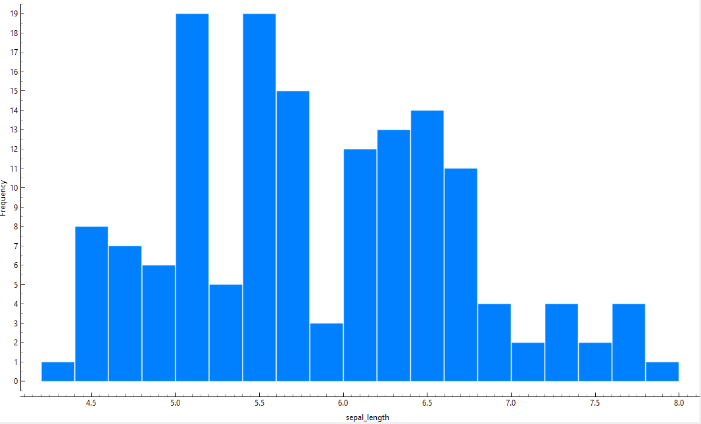
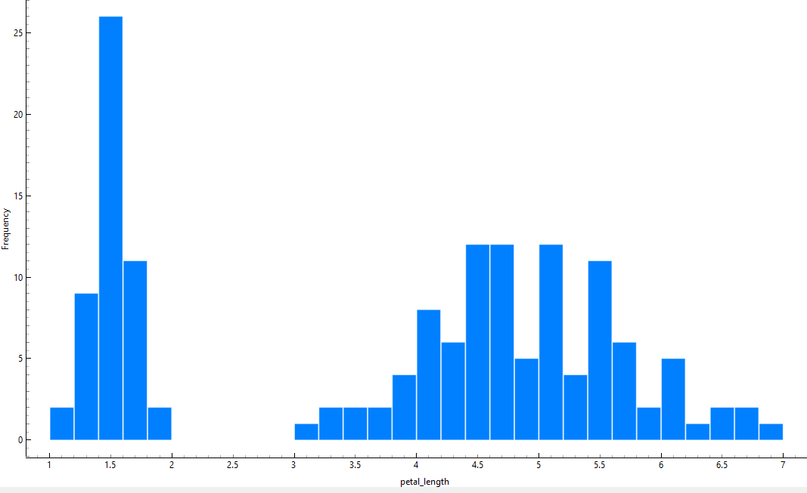
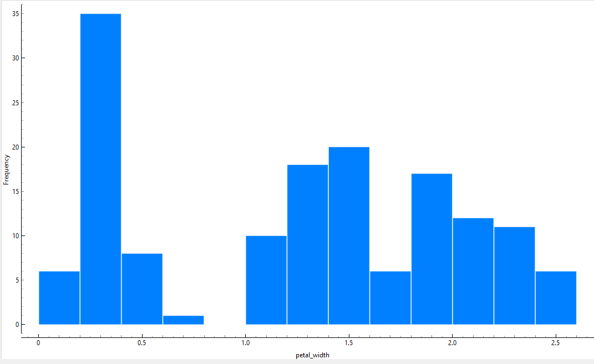
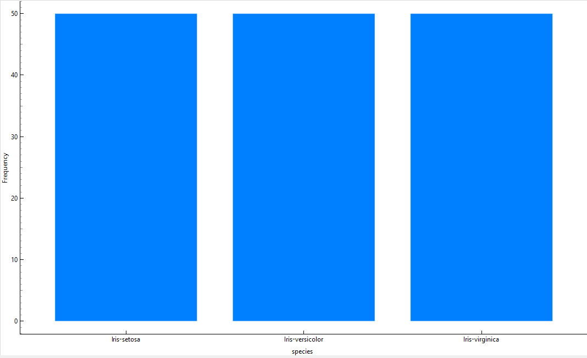
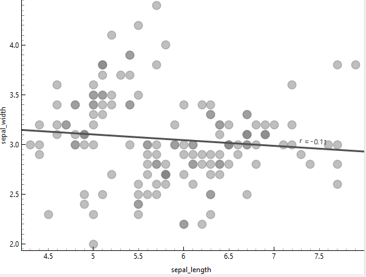
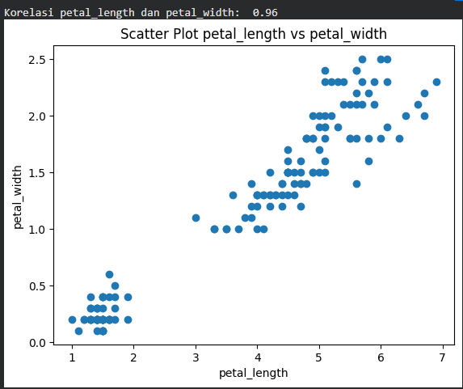

Data Understanding#
Apa itu Metodologi CRISP-DM?#
Dalam mengerjakan proyek penambangan data ini, kita mengikuti alur CRISP-DM (Cross-Industry Standard Process for Data Mining). Metodologi ini punya 6 tahapan utama, mulai dari memahami bisnis sampai modelnya siap dipakai.
Posisi Sekarang: Fase Ke-2#
Tahap Data Understanding adalah fase kedua setelah Business Understanding. Kalau di fase pertama kita fokus ke “apa masalahnya?”, di fase kedua ini kita fokus ke “mana datanya?” dan “gimana kondisi datanya?”.
Tujuan Utama Fase Ini:#
Kenalan sama data: Biar kita gak asing sama isi tabelnya.
Cek Kualitas: Mastiin datanya bersih, gak ada yang kosong (missing values), atau gak ada yang aneh (outliers).
Cari Insight Awal: Nemu pola-pola menarik lewat statistik simpel.
Deskripsi Sumber Data#
Data yang kita pakai bukan sembarang data, tapi dataset legendaris di dunia informatika.
Nama Dataset: Iris Flower Dataset.
Sumber: Data ini sebelumnya sudah kita kelola di database MySQL lewat Laragon di laptop Lenovo Ideapad 330-14AST, lalu kita ekspor ke format CSV.
Isi Data: Pengukuran fisik dari 3 jenis bunga Iris (Setosa, Versicolor, Virginica).
Implementasi: Memuat dan Cek Struktur Data#
Sekarang saatnya kita “panggil” datanya ke lingkungan Python di Google Colab biar bisa kita bedah.
Membaca File CSV#
Kita pakai library pandas buat baca filenya. Kode di bawah ini bisa langsung disalin:
import pandas as pd
df = pd.read_csv('iris.csv')
df.head()
pd.read_csv(‘iris.csv’) untuk Membaca data yang sudah diupload
df.head() untuk Intip 5 baris pertama
Sampel Data#
Berikut adalah gambaran 5 baris pertama (head) dari dataset Iris untuk menunjukkan format data awal:
index |
sepal_length |
sepal_width |
petal_length |
petal_width |
species |
|---|---|---|---|---|---|
0 |
5.1 |
3.5 |
1.4 |
0.2 |
Iris-setosa |
1 |
4.9 |
3.0 |
1.4 |
0.2 |
Iris-setosa |
2 |
4.7 |
3.2 |
1.3 |
0.2 |
Iris-setosa |
3 |
4.6 |
3.1 |
1.5 |
0.2 |
Iris-setosa |
4 |
5.0 |
3.6 |
1.4 |
0.2 |
Iris-setosa |
Struktur Dataset#
Berdasarkan pemeriksaan awal terhadap Iris Flower Dataset, diperoleh informasi struktur sebagai berikut:
Jumlah Baris: Dataset ini memiliki total 150 baris (records).
Jumlah Kolom: Terdapat 5 kolom utama yang digunakan untuk proses analisis.
Sumber Data: Dataset diperoleh dari repositori publik Kaggle.
Deskripsi Atribut (Tipe Data)#
Dataset ini terdiri dari 4 atribut numerik yang merepresentasikan ukuran bagian bunga dalam satuan centimeter (cm) dan 1 atribut kategorikal yang berfungsi sebagai label atau target klasifikasi bunga tersebut.
Kita pakai fungsi df.info() buat lihat tipe data tiap kolom dan mastiin nggak ada data yang bolong.
df.info()
Nama Atribut |
Tipe Data |
Deskripsi |
|---|---|---|
sepal_length |
Numerik (Float) |
Panjang kelopak bunga dalam cm. |
sepal_width |
Numerik (Float) |
Lebar kelopak bunga dalam cm. |
petal_length |
Numerik (Float) |
Panjang mahkota bunga dalam cm. |
petal_width |
Numerik (Float) |
Lebar mahkota bunga dalam cm. |
species |
Kategorikal (String) |
Label spesies bunga (Setosa, Versicolor, Virginica). |
Catatan: Atribut numerik akan digunakan sebagai variabel independen, sedangkan atribut
speciesakan menjadi variabel dependen.
Analisis Singkat:
Total Sampel: 150 data.
Kondisi: Data sangat sehat karena tidak ditemukan nilai kosong (Non-Null).
Atribut: Terdiri dari 4 fitur angka (panjang & lebar kelopak/mahkota) dan 1 kolom target (spesies).
Eksplorasi Data (Data Exploration)#
Setelah tahu struktur atributnya, sekarang kita masuk ke tahap pencarian pola. Tahap ini penting dalam Data Understanding agar kita tahu karakteristik unik dari masing-masing spesies.
Statistik Deskriptif#
Kita hitung nilai rata-rata (\(\bar{x}\)) dan sebaran datanya (\(\sigma\)) untuk melihat ringkasan angka dari 150 sampel yang kita punya.
Kode Python:
# Menampilkan ringkasan statistik untuk semua fitur numerik
df.describe()
index |
sepal_length |
sepal_width |
petal_length |
petal_width |
|---|---|---|---|---|
count |
150.0 |
150.0 |
150.0 |
150.0 |
mean |
5.843333333333334 |
3.0540000000000003 |
3.758666666666666 |
1.1986666666666668 |
std |
0.8280661279778629 |
0.4335943113621737 |
1.7644204199522617 |
0.7631607417008414 |
min |
4.3 |
2.0 |
1.0 |
0.1 |
25% |
5.1 |
2.8 |
1.6 |
0.3 |
50% |
5.8 |
3.0 |
4.35 |
1.3 |
75% |
6.4 |
3.3 |
5.1 |
1.8 |
max |
7.9 |
4.4 |
6.9 |
2.5 |
Penjelasan Parameter:
Setelah menjalankan fungsi
df.describe(), kita akan mendapatkan beberapa parameter kunci yang menjelaskan karakteristik data Iris kita:
Count: Menunjukkan jumlah total baris data yang ada. Untuk dataset ini, jumlahnya adalah 150 sampel.
Mean: Nilai rata-rata dari seluruh data pada atribut tertentu.
Std: Standar deviasi, yang menunjukkan seberapa jauh data tersebar dari nilai rata-ratanya. Semakin besar nilainya, berarti data semakin bervariasi.
Min: Nilai terkecil yang ditemukan dalam kolom tersebut.
Max: Nilai terbesar yang ditemukan dalam kolom tersebut.
Mengenal Quartiles (25%, 50%, 75%)#
Parameter ini membagi data kita yang sudah diurutkan menjadi empat bagian yang sama besar:
25% (Q_1): Kuartil pertama. Artinya, 25% data nilainya lebih kecil atau sama dengan angka ini. Ini membantu kita melihat sebaran data di bagian bawah.
50% (Q_2 / Median): Nilai tengah. Artinya, tepat 50% data berada di bawah angka ini dan 50% lagi di atasnya.
75% (Q_3): Kuartil ketiga. Artinya, 75% data nilainya lebih kecil atau sama dengan angka ini, sedangkan 25% sisanya lebih besar.
Fungsi Quartile: Dengan melihat selisih antara Q_3 dan Q_1, kita bisa menghitung Interquartile Range (IQR) yang berguna untuk mendeteksi apakah ada data yang aneh (outlier) di dataset kita.
Verifikasi Kualitas Data (Null & Duplicate)#
Setelah kita cek angka-angkanya, sekarang kita pastikan data ini benar-benar bersih. Di dunia penambangan data, ada istilah “Garbage In, Garbage Out”; kalau datanya sampah, hasilnya pun bakal sampah.
Pemeriksaan Nilai Null (Missing Values)#
Data kosong bisa bikin algoritma kita error atau salah hitung. Kita pakai fungsi isnull() untuk melihat apakah ada baris yang bolong.
Kode Python:
# Cek jumlah data kosong di setiap kolom
print("Jumlah Data Null:")
print(df.isnull().sum())
Pemeriksaan dilakukan untuk mengidentifikasi keberadaan nilai kosong (missing values) pada setiap variabel dalam dataset. Berdasarkan hasil pengecekan, seluruh kolom tidak memiliki nilai null.
Jumlah Data Null per Kolom#
Nama Kolom |
Jumlah Null |
|---|---|
sepal_length |
0 |
sepal_width |
0 |
petal_length |
0 |
petal_width |
0 |
species |
0 |
dtype: int6 |
Analisis:
Jika hasilnya semua 0, berarti data Iris kamu sudah aman dan lengkap. Tidak perlu ada proses “tambal sulam” data (imputasi).
Pemeriksaan Data Duplikat#
Data duplikat adalah baris yang memiliki seluruh nilai kolom identik satu sama lain. Keberadaan data duplikat dalam jumlah signifikan dapat memengaruhi hasil analisis, terutama pada pemodelan machine learning, karena dapat menyebabkan bias distribusi dan meningkatkan risiko overfitting.
# Cek jumlah data yang kembar
jml_duplikat = df.duplicated().sum()
print(f"Jumlah data duplikat: {jml_duplikat}")
# Kalau mau lihat data mana aja yang kembar:
if jml_duplikat > 0:
print(df[df.duplicated()])
Berdasarkan hasil pengecekan, ditemukan adanya data duplikat dalam dataset.
Jumlah Data Duplikat#
Total data duplikat: 3 baris
Index |
sepal_length |
sepal_width |
petal_length |
petal_width |
species |
|---|---|---|---|---|---|
34 |
4.9 |
3.1 |
1.5 |
0.1 |
Iris-setosa |
37 |
4.9 |
3.1 |
1.5 |
0.1 |
Iris-setosa |
142 |
5.8 |
2.7 |
5.1 |
1.9 |
Iris-virginica |
Ditemukan tiga baris dengan nilai identik.
Visualisasi Data#
Histogram#
Apa itu Histogram?#
Histogram adalah grafik batang yang menggambarkan distribusi atau penyebaran frekuensi data. Alih alih melihat tumpukan angka dalam tabel, histogram mengubahnya menjadi bentuk visual agar kita bisa melihat pola data secara instan.
Kenapa Kita Melakukan Visualisasi Ini?#
Tujuannya adalah untuk memahami karakteristik fisik (seperti panjang dan lebar kelopak bunga) secara cepat. Kita bisa langsung mengetahui:
Pola Utama: Nilai mana yang paling sering muncul (rata-rata).
Variasi: Seberapa luas rentang datanya.
Anomali: Apakah ada data yang letaknya sangat jauh dari kelompok utama.
Panduan Membaca Sumbu (X & Y)#
Agar mudah dipahami, bayangkan sumbu ini sebagai koordinat dasar:
Sumbu X (Horizontal/Mendatar): Mewakili Nilai atau Ukuran. Misalnya, panjang kelopak dalam satuan cm (5cm, 6cm, dst).
Sumbu Y (Vertical/Tegak): Mewakili Frekuensi atau Jumlah. Menunjukkan berapa kali ukuran di sumbu X tersebut muncul dalam data kita.
Logika Singkat: Sumbu X adalah “Apa ukurannya?”, Sumbu Y adalah “Berapa banyak jumlahnya?”.

Fig. 1 Histogram Distribusi Frekuensi Fitur sepal_length#

Fig. 2 Histogram Distribusi Frekuensi Fitur sepal_width#

Fig. 3 Histogram Distribusi Frekuensi Fitur petal_length#

Fig. 4 Histogram Distribusi Frekuensi Fitur petal_width#

Fig. 5 Histogram Distribusi Frekuensi Fitur species#
Scatter plot#
Apa itu Scatter Plot?#
Scatter plot (diagram titik) adalah grafik yang digunakan untuk melihat hubungan antara dua variabel angka. Jika histogram hanya melihat satu fitur, scatter plot mempertemukan dua fitur sekaligus untuk melihat apakah mereka saling memengaruhi.
Kenapa Kita Melakukan Visualisasi Ini?#
Tujuannya adalah untuk mencari Korelasi (pola hubungan). Dengan scatter plot, kita bisa menjawab pertanyaan seperti:
“Kalau kelopak bunganya makin panjang, apakah lebarnya otomatis makin besar juga?”
“Apakah ada kelompok data yang terpisah secara jelas?” (Ini sangat penting untuk teknik Clustering di mata kuliah Penambangan Data).
Memahami Sumbu X dan Y (Titik Pertemuan)#
Cara membacanya sangat sederhana, bayangkan seperti koordinat di peta:
Sumbu X (Horizontal): Variabel pertama (misal: Panjang Sepal).
Sumbu Y (Vertical): Variabel kedua (misal: Lebar Sepal).
Titik (Dot): Setiap satu titik di grafik mewakili satu sampel data yang merupakan pertemuan antara nilai X dan nilai Y.
Scatter Plot sepal_length dan sepal_width#

Fig. 6 Scatter Plot Fitur sepal_length dan sepal width#
Korelasi: Nilai \(r = -0.11\) menunjukkan korelasi negatif yang sangat lemah, hampir mendekati nol.
Insight: Artinya, panjang sepal tidak terlalu memengaruhi lebarnya. Titik-titik data terlihat menyebar (scattered) tanpa membentuk pola garis yang jelas. Untuk klasifikasi, fitur sepal ini biasanya lebih sulit membedakan antar spesies dibanding fitur petal.
Scatter Plot petal dan petal_width#

Fig. 7 Scatter Plot Fitur petal_length dan petal_width#
berikut jika di implementasikan di python
import matplotlib.pyplot as plt
df=pd.read_csv("IRIS.csv")
print("Korelasi petal_length dan petal_width: ",round(df['petal_width'].corr(df['petal_length']), 2))
plt.scatter(df['petal_length'], df['petal_width'])
plt.xlabel('petal_length')
plt.ylabel('petal_width')
plt.title('Scatter Plot petal_length vs petal_width')
plt.show()

Korelasi: Nilai \(r = 0.96\) menunjukkan korelasi positif yang sangat kuat (mendekati sempurna). Insight: Ada hubungan linear yang sangat konsisten semakin panjang kelopak (petal), maka lebarnya hampir pasti bertambah secara proporsional.
Cluster: Kamu bisa melihat ada kelompok kecil di pojok kiri bawah yang terpisah jauh dari kelompok besar lainnya. Itu adalah spesies Setosa, yang secara fisik memang jauh lebih kecil dibanding Versicolor dan Virginica.
Outlier#
Apa itu Outlier?#
Outlier (Pencilan) adalah titik data yang nilainya sangat jauh berbeda dari mayoritas data lainnya dalam satu kelompok. Bayangkan jika kamu mendata tinggi badan mahasiswa di kelasmu yang rata-rata 160–170 cm, tiba-tiba ada satu orang yang tingginya 210 cm. Nah, orang tersebut adalah outlier.
Kenapa Kita Harus Mendeteksi Outlier?#
Dalam pengolahan data, outlier bisa terjadi karena dua hal:
Kesalahan Input: Misalnya salah ketik angka (seharusnya 1.5 jadi 15).
Variasi Alami: Memang ada sampel yang unik/langka.
Penting untuk mendeteksi mereka karena outlier bisa “merusak” hasil statistik (seperti rata-rata) dan membuat model prediksi menjadi tidak akurat.
Metode: Local Outlier Factor (LOF)#
Berdasarkan gambar laporan, saya menggunakan metode LOF.
Cara Kerjanya: LOF tidak hanya melihat nilai angka, tapi melihat kepadatan di sekitar sebuah titik. Jika sebuah titik berada di area yang sangat sepi (jauh dari tetangganya/neighbors), maka sistem akan menandainya sebagai outlier.
Sumbu X & Y pada Outlier : Dalam visualisasi yang kamu buat, sumbu X dan Y tetap mewakili fitur data, namun sistem menambahkan tanda khusus (biasanya warna atau bentuk berbeda) pada titik-titik yang dianggap “aneh” oleh algoritma LOF tersebut.

Fig. 8 Outlier#
berikut jika di implementasikan di python
import pandas as pd
import numpy as np
from sklearn.neighbors import LocalOutlierFactor
df = pd.read_csv("IRIS.csv")
X = df.select_dtypes(include=[np.number]).values
lof = LocalOutlierFactor(
n_neighbors=20,
contamination=0.10,
metric='euclidean'
)
y_pred = lof.fit_predict(X)
df['LOF_Score'] = -lof.negative_outlier_factor_
df['Outlier'] = y_pred
outlier_lines = list(df[df['Outlier'] == -1].index + 1)
print("Total Outlier:", len(outlier_lines))
print("Nomor Baris Outlier:")
print(outlier_lines)
Total Outlier: 15
Nomor Baris Outlier:
[14, 15, 16, 34, 42, 58, 61, 94, 99, 106, 107, 118, 119, 123, 132]